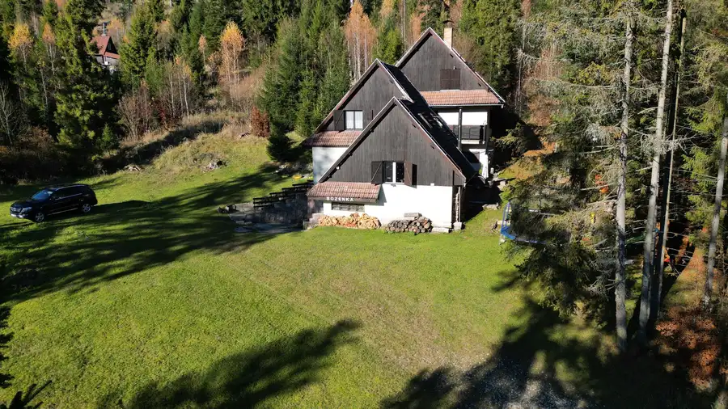
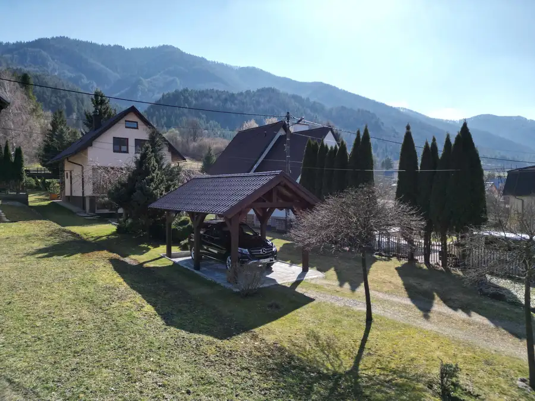
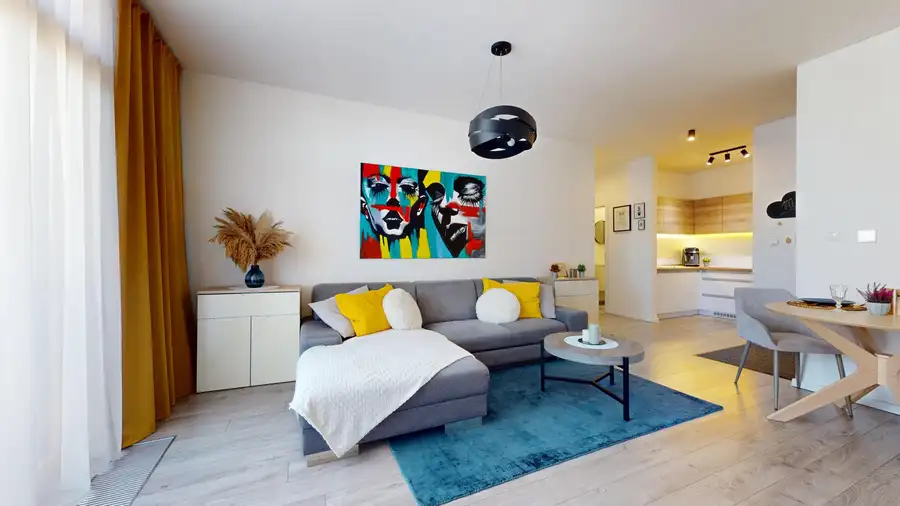

Predaj · Pozemok
TARGETreal | Na predaj, stavebný pozemok Rosina, Žilina
Rosina
175 000 €250 € za m²
- Plocha699 m²
- VlastníctvoOsobné
O nehnuteľnosti
DRON VIDEO NEHNUTEĽNOSTI:https://youtu.be/gjU_0AaFMjMPonúkame Vám na predaj stavebný pozemok pre rodinné domy v obci Rosina. Nachádza sa v tichej vedľajšej ulici s prevažne nízkou, maximálne dvojpodlažnou zástavbou. Z pozemku je výhľad na okolité lesy a lúky. Do centra Žiliny to zvládnete do 5 minút.Na predaj je stavebný pozemok o výmere 699 m2. V cene je obsiahnutý aj 1/4 podiel v prístupovej ceste priamo napojenej na asfaltovú komunikáciu.Inžinierske siete:elektrina - v ulicivodovod - v ulicikanalizácia - v uliciplyn - v uliciV prípade potreby Vám vieme zabezpečiť komplexné financovanie na mieru v ktorejkoľvek banke.Cena 175 000 €ODPORÚČAMMichal Lončík0910 242 787michal.loncik@targetreal.sk
Parametre
| Druh | Pozemok pre rodinné domy |
|---|---|
| Dátum zverejnenia | 8. 10. 2026 |
| Dĺžka pozemku | 43 |
| Elektrina | Pri pozemku - 230 V, Pri pozemku - 400 V |
| Odpadové vody | Pri pozemku - Kanalizácia |
| Plocha pozemku | 699 m² |
| Plyn | Pri pozemku |
| Terén pozemku | Rovinatý |
| Typ | Predaj |
| Vlastníctvo | Osobné |
| Územie | Intravilán |
| Šírka pozemku | 16 |
Kde to je


Ďalšie ponuky
Celá ponukaMohlo by Vás zaujímať

Chata, drevenica, zrubNové10 159 900 €TARGETreal | Na predaj, rekreačná chata Rieka, Čadca Čadca 300 m² VIRTUÁLNA PREHLIADKA:https://my.matterport.com/show/?m=cUvVLSPpcM4DRON VIDEO NEHNUTEĽNOSTI:https://youtu.be/XyqP9ixvb3UPonúkame Vám na predaj…
DomNové10 360 000 €TARGETreal | Predaj, dvojgeneračný rodinný dom Terchová Terchová 200 m² VIRTUÁLNA PREHLIADKA pre náhľad prejidte na link:https://my.matterport.com/show/?m=di3hd7Tq58NObjavte miesto, kde sa spája pohodlie bývania, súkromie…
BytNové10 227 000 €TARGETreal | Na predaj, 2-izbový byt Europalace, Žilina Žilina 2-izbový62 m² VIRTUÁLNA PREHLIADKA: https://my.matterport.com/show/?m=nPDPJaJsBJvVIDEO OBHLIADKA:…